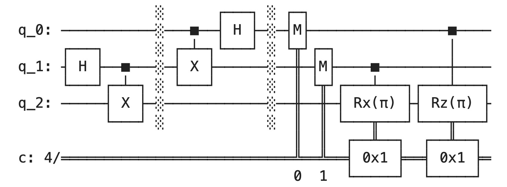

Overview
Furthering my investigation into quantum circuits, I demonstrate the teleportation of quantum information via an entangled EPR pair.
- If we want to send information about an arbitrary qubit, |ψ⟩, we can send this by its interaction with one half of an EPR pair.
- Based on the interaction and measurement of |ψ⟩ with one half of the EPR pair, by measuring the second half, and knowin the classical results of the first measurement, we may determine the state |ψ⟩.
- More detail on this can be found within the ReadMe for this project within its repository.

Please view the repository for this project below.